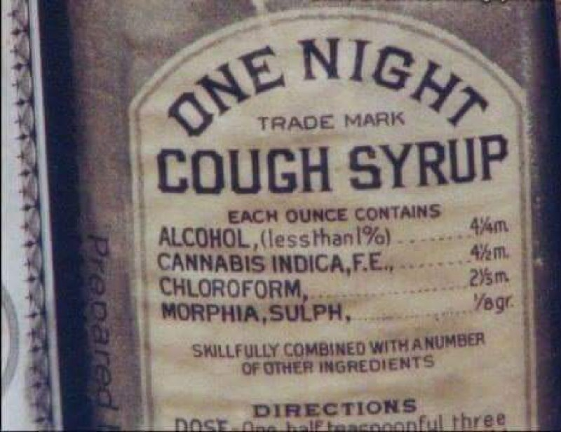

Назад пути уже не будет. Подумай об этом, друг.
•МорфинМорфин, морфий.. Само слово звучит опьяняюще. Итак, мы имеем дело с основным алкалоидом опиума, что известен миру с давних времён: полистай, брат, романы Толстого, а Булгаков вообще книгу так свою назвал. Морфин можно смело назвать натуркой, он содержится в соке опийного мака. Ну конечно за столько лет люди насинтезировали уже и синтетический морфин, а потом, кстати говоря, на его основе был синтезирован героин. Сейчас существует три разных формы выпуска морфина, будто специально под наркоманов подстроились: в ампулах - коли, в таблетках - глотай, ну а порошок можно и нюхнуть. Что касается действия, конечно, внутривенно тебя торкнет лучше.
В общем, смотри, что будет: сначала тебе невыразимо втащит - эйфория, счастье, любовь, тяга к жизни. Это основной и столь желаемый эффект.
Затем ты расслабишься, тебя размажет по полу/кровати, захочется спать, пошевелиться сможешь с трудом. Ничего не будет хотеться: ни есть, ни пить, ни даже секса.
А далее, через 8-18 часов после приёма, ты испытаешь самое страшное - синдром отмены. Сначала возникает слюнотечение, плаксивость, зевота, потливость. Дальше - хуже. Тремор конечностей, рвота, ломота суставов, озноб. Ты зол, раздражителен, тебе страшно. Можно сказать, обратный эйфории эффект. Несмотря на все эти, так сказать, неудобства, основной твоей целью становится поиск новой дозы, ведь с её приёмом все это отпустит.
Для избавления от синдрома отмены врачи обычно используют ноотропил, пирроксан + лечебное питание и курс витаминов. Но без твоего участия сняться не выйдет, нужна твоя сила воли и желание бросить. Это долгий и нелегкий путь, так что лучше не начинай.
• Дезоморфин«Твоя последняя система». Если ты, дорогой мой героинщик, опустился до такой степени, что перед тобой разинулась крокодилья пасть — поучи немного химии. Выучи, что такое кислотно-щелочная экстракция алкалоидов и научись работать с вакуумным оборудованием. Сварив продукт не из кодеиновых таблеток, а из экстрагированного из них чистого кодеина, высушив сырую «электроширку» насухо под вакуумом и проведя над ней кислотно-щелочную экстракцию алкалоидов, ты уберёшь из адова зелья большую часть адовости и получишь хороший, годный, хотя и не совсем чистый дезоморфин. В нём будут примеси йодокодида и других промежуточных и побочных продуктов, но хотя бы не будет чистого йода, фосфора, бензина и прочего йада, и его можно будет неограниченно долго хранить. Поскольку очищенный продукт с одной стороны непортящийся, а с другой долго и муторно готовящийся, делать его лучше сразу большими партиями и редко — заодно нервы побережёшь.desomorphin.pdf
• СубутексТорговая марка бупренорфина, полусинтетического опиата. Применяется в качестве заместительного препарата подобно метадону, в отличие от последнего менее токсичен и менее склонен к развитию толерантности, обладая, к тому же, некоторым антидепрессивным действием. Мощнейший анальгетик, так что в цивилизованных странах его назначают при сильных болях.При постоянном употреблении субутекса (субика) иньекция герыча уйдёт впустую, не вызвав привычного прихода. Ещё один интересный эффект субутекса — если его сожрать или вмазать, находясь под морфинами, то начинается жесточайший конфликт веществ в организме. Поэтому морфинисту следует вначале дождаться сильных кумаров (минимум 48 часов после последнего укола) и лишь потом закидываться субиком.